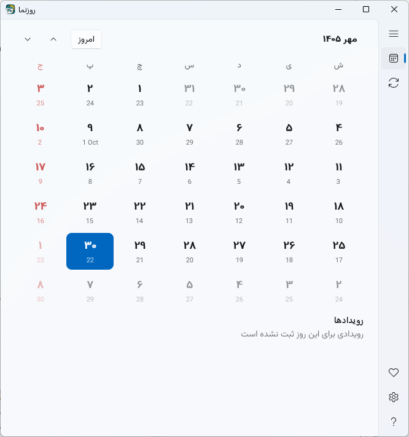
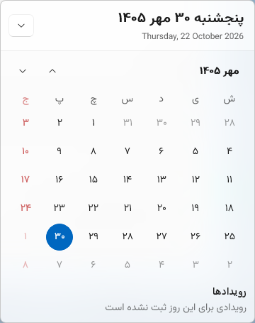
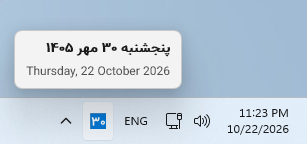
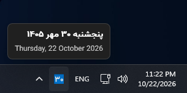

تاریخ کنار ساعت
عدد روز شمسی روی آیکون نوار وظیفه و تاریخ کامل در توضیح آن.
روزنما تقویم شمسی را به گوشهای از ویندوز میآورد که همیشه به آن سر میزنی؛ کنار ساعت، در System Tray.
روز شمسی را روی آیکون ببین، با یک کلیک تقویم را باز کن و تاریخهای شمسی، میلادی و قمری را در دسترس داشته باش.




تقویم چندگانه و امکانات روزمره، در یک برنامه سبک و بیدردسر.
عدد روز شمسی روی آیکون نوار وظیفه و تاریخ کامل در توضیح آن.
تبدیل و مشاهده تاریخهای شمسی، میلادی و قمری.
نمایش مناسبتها، تعطیلات و قواعد ثابت تقویمها؛ با دادههای همراه برنامه.
در نسخههای اخیر، سازوکار بهروزرسانی برنامه با Velopack پیادهسازی شده تا دریافت و نصب نسخههای جدید سادهتر و سبکتر باشد.
تم روشن، تاریک و خودکار، اجرای اختیاری با شروع ویندوز و رابط فارسی و انگلیسی.
تصاویر واقعی از نسخه فعلی روزنما؛ بدون ماکاپ یا بازسازی رابط کاربری.


برای ویندوز؛ بدون نیاز به نصب پیشنیازهای جداگانه.